📍 San Jose: 65° / 48°F, Overcast
⏱ ~73 min reading
130 items
|
The Morning Brief
Executive Personal Intelligence Briefing
|
Saturday, October 31, 2026
Sunrise 07:31 · Sunset 18:10 · AQI 56 · Moon: Last quarter, 69% lit
|
|
Executive Synthesis: Wall Street closes October lower on a deepening tech rout, while Iran offers a Hormuz reopening timeline, agent builders get trajectory evaluation and parallel GEPA optimizations, and Sindhu and Sen reach Saarbrücken finals.
Don't Miss
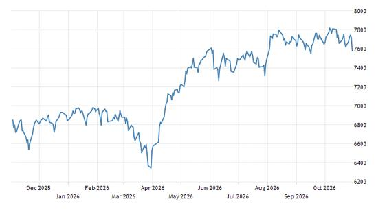
Wall Street Falls on Tech Slump as Nasdaq Drops 2.86% to Close October Lower
—
The main U.S. equity benchmarks closed sharply lower on Friday, October 30, 2026, pressured by heavy losses in technology shares. The S&P 500 fell 1.82% to 7,580.07, while the Nasdaq Composite tumbled 3.5% and the Dow lost 572 points. For the full week, the S&P 500 fell 0.9%, the Nasdaq shed 2.4%, and the Dow lost 1.2%. For the month of October, the S&P 500 declined 0.9% and the Nasdaq lost 6.6%, while the Dow added 1.7%.
Takeaway: Relevant to your tracking of broad US equity benchmarks, sector regime shifts, and monthly index performance.
 Matched Capabilities, Different Behaviors: A Controlled Study of MCP and CLI Interfaces for Language Agents
Matched Capabilities, Different Behaviors: A Controlled Study of MCP and CLI Interfaces for Language Agents
—
Examines whether Model Context Protocol (MCP) and command-line interfaces (CLI) alter agent actions when backend capabilities are held constant. The authors introduce MICA to render both interfaces from a shared action contract. Across six models and three interactive environments, paired natural trajectories show structured divergence in 94.3% of 2,004 episodes. Their repair method, DART, improves scores by up to 9.0 points while reducing MCP token cost by up to 27.1k tokens per task. The study is a preprint evaluated on three benchmarks, requiring replication across broader production agent tools.
Takeaway: Directly affects your agent harness and runtime decisions: choosing between structured MCP tool schemas and CLI text formats changes trajectory drift, failure recovery, and token overhead even with identical underlying tools.
Sierra crosses $400M ARR as enterprise agent adoption accelerates
—
Sierra co-founder and CEO Bret Taylor announced that the enterprise customer-service agent company crossed $400M in annual recurring revenue just two and a half years after launch, adding more than $150M ARR during Q3 2026 alone. Taylor highlighted the expanding enterprise shift toward long-horizon agents that manage customer problems spanning dozens of interactions over weeks or months, underpinned by outcome-based pricing rather than traditional seat licenses.
Takeaway: Directly tracks your enterprise agent platform benchmarking, providing commercial validation for conversational customer service agents and outcome-based pricing models.
Hylo Open: PV Sindhu Sweeps Anmol Kharb to Reach Women's Singles Final in Saarbrücken
—
In an all-Indian women's singles semifinal at the BWF Hylo Open 2026 Super 500 in Saarbrücken, Germany, second seed P.V. Sindhu defeated 19-year-old compatriot Anmol Kharb 21-13, 21-16. Sindhu utilized deep baseline clears and steep angles to blunt Kharb's agile net play and defensive counter-attacks. With the straight-games victory, Sindhu advanced to Sunday's championship match, where she will face top seed Line Hojmark Kjaersfeldt of Denmark.
Takeaway: Directly relevant to your badminton tracking, covering P.V. Sindhu's title run on the BWF World Tour circuit in Germany.
Iran Proposes Two-Day Timeline to Reopen Strait of Hormuz While Warning Against US Military Strikes
—
Iranian Foreign Minister Abbas Araghchi announced that consultations with Qatari mediators yielded a revised proposal to fully reopen the Strait of Hormuz within two days, down from a previous week-long timeframe. Tehran’s terms include lifting recent maritime sanctions, restoring oil waivers, and unfreezing assets in Qatar. Simultaneously, Supreme Leader Mojtaba Khamenei ordered the armed forces to deliver an immediate, unrestricted response to any attack, while regional diplomats from Egypt and Saudi Arabia urged de-escalation at a Bahrain forum.
Takeaway: Ties directly to your tracking of Middle East geopolitics, energy transit corridors through Hormuz, and global macro stability.
Aadarsha Kutumbam Opens with Rs 16 Crore Worldwide Gross on Day 1
—
Venkatesh and director Trivikram Srinivas's crime family comedy Aadarsha Kutumbam grossed approximately Rs 16 crore worldwide on its opening Friday, with domestic theatres in the Telugu states contributing Rs 11 crore alongside solid North American receipts. While critical reviews were mixed and adverse coastal weather dampened initial turnouts, theatrical footfalls trended upward into Saturday morning, driven by positive reception for Venkatesh's comic timing and the interval sequence. The film plays in theatres worldwide.
Takeaway: Ties directly to your tracking of Tollywood weekend box office numbers and festive theatrical openings.
Three developing stories advanced: ISRO placed the NVS-03 navigation satellite into orbit, PV Sindhu reached the Hylo Open semifinals, and Charles Leclerc swept Friday practice in Mexico.
ISRO's GSLV-F18 successfully launches NVS-03 navigation satellite into orbit
—
The brief earlier covered "ISRO schedules the NVS-03 navigation-satellite launch for 11:51 pm IST on 30 October to help restore NavIC". As scheduled, the 50-metre GSLV-F18 rocket lifted off from Sriharikota at 11:51 pm IST on Friday, October 30. ISRO confirmed mission success shortly after midnight, successfully deploying the 2,232-kg NVS-03 satellite into Geosynchronous Transfer Orbit to augment India's regional NavIC constellation.
Takeaway: Ties directly to your tracking of Indian space missions, regional infrastructure developments, and satellite technology advancements based out of Sriharikota in Andhra Pradesh.
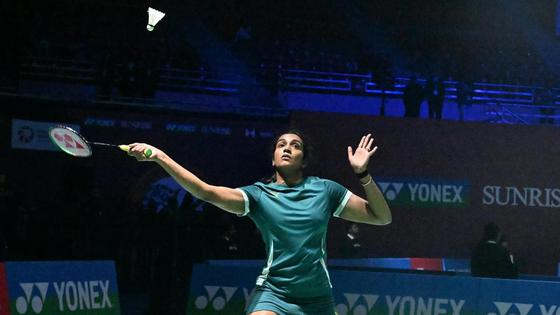
PV Sindhu cruises past Schulz in 28 minutes to reach Hylo Open semifinals
—
The brief earlier noted "Hylo Open quarterfinals today: order of play with Pacific times for Sindhu and Lakshya Sen". In the quarterfinals on Friday, second seed P. V. Sindhu defeated Denmark's Amalie Schulz 21-12, 21-10 in 28 minutes. Sindhu advances to face teenage compatriot Anmol Kharb, who defeated sixth seed Unnati Hooda 21-17, 18-21, 21-16, guaranteeing an Indian finalist in Saarbrücken.
Takeaway: Relevant to your active tracking of pro badminton and Indian shuttlers on the BWF World Tour, with Sindhu now positioned for back-to-back European finals.
Charles Leclerc sweeps Friday practice in Mexico as Antonelli returns and Verstappen penalised
—
The brief earlier reported "Antonelli misses Mexico City media day with illness as he nears the F1 title". Returning to the cockpit on Friday, Kimi Antonelli finished P2 in FP1 and P4 in FP2. Charles Leclerc led both sessions for Ferrari with a best lap of 1:17.827. Max Verstappen took P5 in FP2 following floor damage from contact with Liam Lawson in the stadium section.
Takeaway: Follows your interest in Formula 1 championship dynamics, as points leader Antonelli returns to action needing only a ninth-place finish to secure the 2026 title.
Tooling and enterprise platforms delivered notable moves: Anthropic shipped Claude Code v2.1.311 with auto-compaction, Sierra surpassed $400M ARR, and Salesforce expanded Agent Fabric guardrails. Meanwhile, OWASP published its initial MCP Top 10 security risks and Scale Labs revised SWE-Bench Pro.
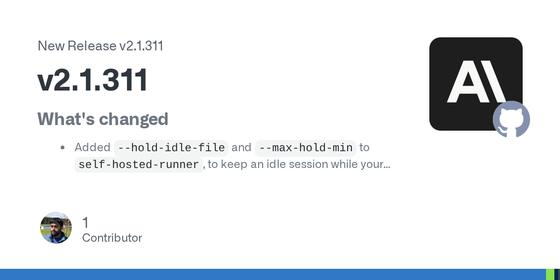
Anthropic releases Claude Code v2.1.311 with standard-context auto-compaction and runner idle hold
—
Anthropic released Claude Code v2.1.311, resolving an issue where standard-context sessions halted with a usage credit error upon exceeding 200K tokens. Sessions now automatically trigger conversation compaction and proceed without manual intervention. The release also adds --hold-idle-file and --max-hold-min flags to self-hosted runners to keep worker processes alive during idle intervals, accelerates startup by caching update checks, and prevents isolated subagent worktrees from premature deletion while background tasks remain active.
Takeaway: Directly impacts your daily coding agent sessions in Claude Code, preventing multi-turn coding and subagent tasks from crashing when standard context reaches 200K tokens.
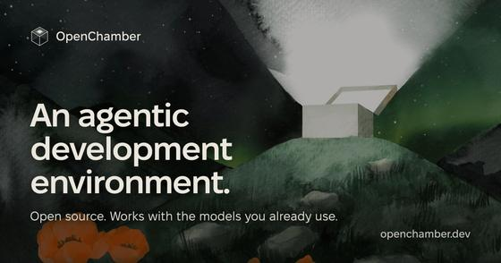
OpenChamber 2.5.3 adds persistent background auto-review loops, snippets management, and PR watchers
—
OpenChamber 2.5.3 updates its bundled OpenCode runtime to 2.2.0 and introduces background persistence for the automated code review loop, allowing multi-turn reviews to proceed even if the user locks their device or closes the browser tab. The release also adds a reusable snippets manager accessible via the # picker, pull request monitoring that wakes idle agents on PR comments or CI status changes, and local dictation support powered by Whisper large-v3 turbo and Qwen3-ASR.
Takeaway: Enhances your OpenChamber session supervision by allowing automated review loops and agent pull-request monitoring to run autonomously without keeping your screen active.
Sierra crosses $400M ARR as enterprise agent adoption accelerates
—
Sierra co-founder and CEO Bret Taylor announced that the enterprise customer-service agent company crossed $400M in annual recurring revenue just two and a half years after launch, adding more than $150M ARR during Q3 2026 alone. Taylor highlighted the expanding enterprise shift toward long-horizon agents that manage customer problems spanning dozens of interactions over weeks or months, underpinned by outcome-based pricing rather than traditional seat licenses.
Takeaway: Directly tracks your enterprise agent platform benchmarking, providing commercial validation for conversational customer service agents and outcome-based pricing models.
Salesforce Expands Agent Fabric to Automatically Stop Runaway Costs and AI Agent Failures
—
Salesforce introduced Agent Evals, API Evals, and new FinOps spending controls to Agent Fabric, its control plane for multi-platform enterprise agents handling 1.2 billion daily requests. Agent Evals continuously benchmarks live agent quality, automatically quarantining failing agents or triggering an Agent Kill Switch. API Evals synthesizes test suites from API specs to catch breaking changes, while Cost Optimization Policies cut token spend up to 75% via semantic caching and response compression.
Takeaway: Relevant to your focus on agent evaluation, observability, and guardrails, demonstrating how enterprise platforms operationalize live-traffic evals and automated kill switches.
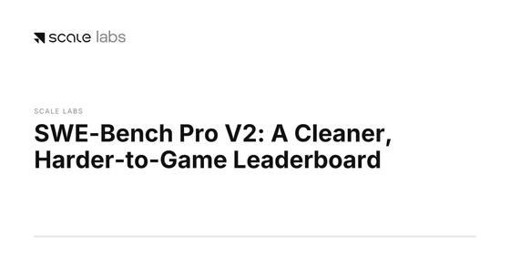
Scale Labs releases SWE-Bench Pro V2 with network locking and drops 89 invalid tasks
—
Scale Labs and Reflection released SWE-Bench Pro V2, a refreshed benchmark and public leaderboard. The public split was trimmed from 731 to 642 tasks across 11 repositories by dropping 89 invalid tasks, and introduces SWE-Bench Pro v2 Hard with 51 challenging tasks. The protocol enforces network locking during agent runs and re-grades patches on clean containers. While Claude Opus 5 leads the public board at 99.4% (638/642 resolved), it scores 81.6% (222/272) on the private split; Scale attributes the 17.8-point gap to training-time exposure rather than runtime leakage.
Takeaway: Exposes how training-time contamination inflates public coding-agent benchmarks toward saturation, directly informing your agent-evaluation and benchmark-selection work.
Mistral releases open weights for Mistral Large 4 with 1M context and day-zero vLLM support
—
Mistral AI published open weights for Mistral Large 4 on Hugging Face in FP8 and NVFP4 checkpoints under the Mistral Ecosystem Open-Weight License. The multimodal MoE model features ~1T total and 49B active parameters per token (52B with embeddings), a 1M-token context, and a 1.6B Pixtral vision encoder. Three additional weeks of post-preview reinforcement learning raised its vendor-reported Terminal-Bench 4.0 score by 13 points to 41%, alongside 61.7% on DeepSWE v1.1. In tandem, Mistral cut hosted API prices roughly in half to $0.70 input and $2.10 output per million tokens.
Takeaway: Offers a trillion-parameter open-weight alternative for local agent runtime and harness testing, with native tool calling, vLLM serving recipes, and competitive coding scores.
OWASP MCP Top 10: Ten Critical Security Risks in the Model Context Protocol Ecosystem
—
OWASP released beta details for the OWASP MCP Top 10, establishing a dedicated security checklist for the Model Context Protocol used by AI agents. Key vectors include token mismanagement (MCP01), scope creep (MCP02), tool poisoning via schema tampering or hidden instructions (MCP03), supply-chain package tampering (MCP04), command execution (MCP05), and contextual prompt injection or intent flow subversion (MCP06). The project recommends a five-phase defense cycle: continuous server inventory, minimal tool scoping, description inspection, immutable call logging, and proactive red-team injection testing.
Takeaway: Directly relevant to your daily work with OpenCode and MCP servers, providing a structured checklist to audit tool schemas, token exposure, and runtime execution boundaries.
 Bank Policy Institute: AI 'Agents' Lack Legal Fiduciary Duties and Disclaim User Protections
Bank Policy Institute: AI 'Agents' Lack Legal Fiduciary Duties and Disclaim User Protections
—
The Bank Policy Institute analyzed the legal and safety disconnect between common-law agency and commercial AI agents. Under agency law, an agent owes strict fiduciary duties of loyalty, care, and confidentiality. In contrast, commercial AI agents carry zero legal fiduciary obligations: vendor terms of service disclaim agency relationships, shift all financial loss from automated actions onto the user, and cap provider liability at $250 for unintended transactions. BPI warns that absent legal guardrails, technical controls must prevent unauthorized transactions and data leakage.
Takeaway: Ties directly to your agent guardrails and enterprise architecture work, highlighting why technical runtime guardrails must strictly constrain agent authority when legal terms shift all operational risk onto users.
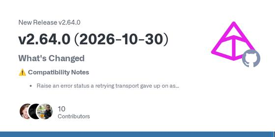
Pydantic AI 2.64.0 relaxes Coder tool schemas, adds BoxdSandbox workspaces, and introduces ArtifactScanner
—
Pydantic AI released version 2.64.0, bringing significant changes to its agent harness and evaluation stack. Strict JSON tool schemas are now disabled by default for Coder tools to prevent validation failures on models with relaxed formatting, with an opt-in toggle retained. The release introduces BoxdSandbox for isolated capability execution across shell and filesystem tools, adds ArtifactScanner to check Memory and Skills artifacts, provides a ModelFallback capability with per-attempt hooks, and allows plain functions as evaluators in pydantic_evals.
Takeaway: Directly relevant to your agent evaluation and harness engineering work with Pydantic AI, providing container sandboxing, artifact security auditing, and simplified custom evaluators.
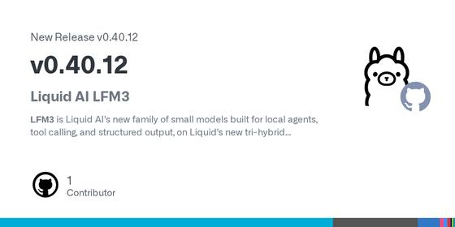
Ollama 0.40.12 adds OpenCode v2 launch compatibility, Liquid AI LFM3 models, and DFlash2 speculative decoding
—
Ollama released version 0.40.12, adding direct launch compatibility with OpenCode v2 via ollama launch. The update integrates Liquid AI's LFM3 tri-hybrid model family on Apple hardware, including the 1.7B text model with a 256K context window and the 2B d1 decision model for text and image classification. Additionally, speculative decoding gained support for DFlash2 draft models on the MLX runner, small-image detail retention was improved on Gemma 4, and prompt processing received performance optimizations for Gemma 4 and Flint.
Takeaway: Directly connects to your daily use of OpenCode and exploration of local agent runtimes, enabling streamlined local model launches and fast speculative decoding.
How to Decide What Your AI Agent Should Remember - Wojciech Pluta, Oracle
—
Wojciech Pluta of Oracle AI Database explains memory promotion architectures for autonomous agents, moving beyond read-only RAG to structured state persistence. He details the complete promotion lifecycle: evaluating whether incoming observations are worth retaining, reconciling new details against existing entity records, and applying admission, rejection, and escalation policies. The talk demonstrates a production mortgage-agent demo that successfully maintains operator preferences and context across multiple independent sessions.
Takeaway: Addresses your core focus on agent harness architecture, state management, and memory engineering for production LLM agents.
Inside Managed Deep Agents: mda CLI, Context Hub, and Harbor Evals | Interrupt London
—
Victor Moreira, product manager at LangChain, explains how to transition deep autonomous agents from local prototypes to robust production deployments using Managed Deep Agents. Using LangChain's internal go-to-market agent as a concrete case study, he walks through scaffolding projects with the mda CLI, managing prompt and knowledge assets via Context Hub, and running automated regression evals through Harbor within the LangSmith observability platform.
Takeaway: Directly connects to your daily work with agent evaluation, context engineering, and harness infrastructure.
Today's papers emphasize that agent behavior is shaped by interfaces and measurement protocols. A controlled study reveals marked behavioral divergence between MCP and CLI agent interfaces, while parallel GEPA and Bud ContextCompact 2.0 demonstrate practical latency and context-reduction gains.
Matched Capabilities, Different Behaviors: A Controlled Study of MCP and CLI Interfaces for Language Agents
—
Examines whether Model Context Protocol (MCP) and command-line interfaces (CLI) alter agent actions when backend capabilities are held constant. The authors introduce MICA to render both interfaces from a shared action contract. Across six models and three interactive environments, paired natural trajectories show structured divergence in 94.3% of 2,004 episodes. Their repair method, DART, improves scores by up to 9.0 points while reducing MCP token cost by up to 27.1k tokens per task. The study is a preprint evaluated on three benchmarks, requiring replication across broader production agent tools.
Takeaway: Directly affects your agent harness and runtime decisions: choosing between structured MCP tool schemas and CLI text formats changes trajectory drift, failure recovery, and token overhead even with identical underlying tools.
TAO: Tool-Aware Joint Scheduling for LLM-Based Agentic Serving
—
Addresses GPU resource idling during external tool execution in agentic services. TAO models session value using time-decayed KV-cache credit with a 10-second half-life, tool-return readiness, and token footprint, placing waiting sessions via dynamic programming. Across 12 model-workload configurations on SWE-Lite and Terminal-Bench, it reduces latency by up to 26.8%, cuts mean TTFT by up to 36.3%, and increases decode throughput by up to 29.5%. However, median latency gains are lower at 4.6%, and performance degrades on non-tool chat workloads.
Takeaway: Relevant to agent serving and runtime latency: shows how coordinating GPU inference pauses with predicted external tool duration prevents cache thrashing in high-concurrency agent deployments.
Bud ContextCompact 2.0: Context Compaction for Agent Success and Accuracy with Small Language Models and Constrained Context Windows
—
Researchers from the Bud agent runtime team evaluate ContextCompact 2.0, an automated summarization mechanism designed to prevent multi-turn agent sessions from exhausting constrained context windows. On 100 SWE-bench Verified tasks run by a 27B reasoning model across 556 graded sessions, compaction increased the resolve rate on long sessions from 41% to 53% while using 13% fewer tokens per solved task. However, gains vanished under a 45-minute session budget because each summary required a median of 161 seconds.
Takeaway: Directly relevant to your context engineering and harness design: compaction saves tokens and prevents reasoning-turn overflow, but compaction latency must be budgeted explicitly to avoid hitting wall-clock session timeouts.
MAServeBench: Benchmarking Multi-Agent LLM Serving Systems with Hierarchical Collaboration Workloads
—
Researchers from Peking University and Georgia Tech introduce MAServeBench, a benchmark evaluating LLM serving engines under multi-agent workloads with interdependent execution dependencies. Across GPU and NPU platforms, expanding KV-cache capacity from 16 to 40 GiB reduced the processed-to-source prefill factor by 52% and root P95 latency by 17.5%. However, the authors demonstrate that hardware-level serving efficiency does not guarantee timely task completion: at high load, additional KV capacity raised output token throughput by 7.7% without improving deadline goodput.
Takeaway: Essential for multi-agent runtime and serving architecture: it proves why optimizing token throughput or KV caching alone can fail to meet end-to-end task SLOs when multi-agent coordination introduces critical-path dependency barriers.
Batching the Reflective Optimization Loop: Parallel Proposals Make GEPA Faster and Better
—
Researchers at UC Berkeley tackle the sequential bottleneck of reflective prompt optimizers like GEPA, which leave parallel evaluation clusters idle. By proposing and evaluating batches of candidate prompt mutations concurrently (PxN sampling), batched runs cut wall-clock optimization time by 3x to 4x. Batched search raised held-out test accuracy from 68.9% to 72.1% on LiveBench-Math and from 49.0% to 60.0% on HoVer while improving budget efficiency. How to optimally divide compute budgets across parent sampling versus parallel mutations remains an open question.
Takeaway: Directly relevant to your prompt optimization work: batching GEPA candidate proposals unlocks massive wall-clock speedups and better exploration for your offline agent prompt tuning harnesses.
Interaction-as-a-Judge: Evaluating Interactive Applications with Computer-Use Traces
—
Researchers from UC Berkeley, CMU, and UCLA address the blindness of code-only LLM judges to interactive run-time defects. By deploying computer-use agents to actively interact with applications in browser environments, Interaction-as-a-Judge improved human preference prediction from 65.6% to 69.1% and requirement verification from 77.0% to 81.6%. In generation self-repair, interaction feedback resolved 75.5% of broken requirements versus 55.4% for code-only inspection. However, high per-step inference costs currently constrain computer-use evaluation budgets.
Takeaway: Informs your trajectory evaluation and observability work by showing how dynamic execution traces outperform static code review when evaluating autonomous agent artifacts.
Wall Street Falls on Tech Slump as Nasdaq Drops 2.86% to Close October Lower
—
The main U.S. equity benchmarks closed sharply lower on Friday, October 30, 2026, pressured by heavy losses in technology shares. The S&P 500 fell 1.82% to 7,580.07, while the Nasdaq Composite tumbled 3.5% and the Dow lost 572 points. For the full week, the S&P 500 fell 0.9%, the Nasdaq shed 2.4%, and the Dow lost 1.2%. For the month of October, the S&P 500 declined 0.9% and the Nasdaq lost 6.6%, while the Dow added 1.7%.
Takeaway: Relevant to your tracking of broad US equity benchmarks, sector regime shifts, and monthly index performance.
Semiconductor Sector Slides as AMD Tumbles 10.9% and Nvidia Falls 4.2%
—
Semiconductor equities slid sharply on Friday, October 30, 2026, following a severe sector-wide reassessment of PC hardware demand and high component pricing. Advanced Micro Devices dropped 10.88%, while Nvidia fell 4.22% to close at $204.64. Investors questioned whether surging memory costs consumed by AI data centers are squeezing consumer PC shipments. Despite consumer headwinds, enterprise infrastructure demand remained resilient, with Intel reporting 78% growth in its Data Center and AI division to $7.3 billion.
Takeaway: Relevant to your focus on AI infrastructure hardware, semiconductor valuations, and compute supply-chain trends.
Apple Ahead of Earnings: Revenue Forecast Tops $113 Billion for John Ternus's CEO Debut
—
Apple is scheduled to report its fiscal fourth-quarter results on Monday, November 2, 2026, marking the first earnings release under Chief Executive Officer John Ternus following Tim Cook's transition to Executive Chairman. Wall Street consensus expects quarterly revenue to reach $113.44 billion with earnings per share of $1.99. Investors are watching early upgrade demand for the iPhone 18 Pro lineup, high-margin Services gross margins of 75.6%, and supply constraints stemming from elevated semiconductor costs.
Takeaway: Relevant to your tracking of major consumer tech platforms, hardware cycles, and leadership transitions.
FIIs Buy ₹3,599 Crore on Friday, but October Selling Tops ₹45,000 Crore; Nifty Eyes 23,200
—
Foreign institutional investors bought a net ₹3,598.54 crore of Indian equities in the cash market on Friday, October 30, following gross purchases of ₹20,564.02 crore against sales of ₹16,965.48 crore. Domestic institutional investors turned net sellers of ₹817.51 crore. For October as a whole, foreign investors recorded net outflows of ₹45,161.71 crore, which were more than absorbed by domestic institutions' net purchases of ₹62,220.11 crore.
Takeaway: Relevant to your tracking of Indian institutional liquidity and monthly FII flow trends in the cash market.
SEBI Extends FPI KYC Review Periodicity to 2 and 8 Years from December 2026
—
SEBI issued Circular HO/19/34/14(10)2026-AFD-POD3/I/24814/2026 on October 30 to rationalise KYC review cycles for Foreign Portfolio Investors starting December 1, 2026. The revised framework increases the review interval from annual or three-year cycles to two or eight years based on category and jurisdiction risk. Additionally, SEBI dispensed with the requirement for FPIs to submit change intimations or no-change declarations during their three-year registration renewals.
Takeaway: Relevant to your focus on Indian market regulatory frameworks and foreign institutional investor compliance policies.
BEL Q2: Net profit rises, beats street estimates; order book at ₹68,717 crore
—
Defence PSU Bharat Electronics Limited reported a 19.8% year-on-year increase in standalone profit after tax to ₹1,541 crore for the quarter ended September 30, 2026, surpassing the street estimate of ₹1,380 crore. Operational revenue rose 26.5% to ₹7,291 crore, while operating EBITDA climbed 20.4% to ₹2,040 crore with an EBITDA margin of 28%. As of October 1, 2026, BEL's total order book stood at ₹68,717 crore.
Takeaway: Relevant to your focus on Indian defence electronics and capital goods earnings trends.
 Qualcomm reports fiscal Q4 2026 results on 4 November with conference call at 1:45 p.m. PT
Qualcomm reports fiscal Q4 2026 results on 4 November with conference call at 1:45 p.m. PT
—
Qualcomm Incorporated will release its fourth quarter and fiscal 2026 financial results after market close on Wednesday, 4 November 2026. Executive management will host an earnings conference call the same day at 1:45 p.m. Pacific Time (4:45 p.m. ET) to discuss financial and operational performance across handset silicon, automotive platforms, and Snapdragon compute processors. An audio replay will remain accessible for 30 days.
Takeaway: Qualcomm is a central bellwether for edge AI processing, Snapdragon compute silicon, and hardware architectures relevant to your AI device tracking.
 Bank of England MPC announces Bank Rate decision and Monetary Policy Report on 5 November
Bank of England MPC announces Bank Rate decision and Monetary Policy Report on 5 November
—
The Bank of England's Monetary Policy Committee will announce its scheduled Bank Rate decision, release meeting minutes, and publish its quarterly Monetary Policy Report on Thursday, 5 November 2026 at 12:00 GMT (5:00 a.m. PT / 8:00 a.m. ET). The Bank Rate stands at 3.75% following the September meeting. The release sets borrowing costs and economic forecasts for the UK economy.
Takeaway: Major global central bank decisions are tracked on your macro calendar to gauge sovereign bond yields and international monetary policy trends.
 Data Patterns India to hold board meeting on 6 November for Q2 FY27 financial results
Data Patterns India to hold board meeting on 6 November for Q2 FY27 financial results
—
Data Patterns (India) Limited notified BSE and NSE that its Board of Directors will meet on Friday, 6 November 2026 to review and approve standalone and consolidated unaudited financial results for the quarter and half-year ended 30 September 2026. In accordance with insider trading regulations, the company's trading window remains closed until 48 hours following the results declaration.
Takeaway: Defence and aerospace electronics is one of your active Indian market sector themes, and Data Patterns represents key radar and avionics supply.
Intel Plunges 29% on Weak Outlook as Tech Selloff Deepens | Closing Bell
—
Bloomberg anchors and market analysts review Friday's U.S. market close on October 30, 2026, where a broad technology selloff accelerated. Intel dropped 29% following a weak forward outlook and disappointing gross margins, while concerns over elevated AI infrastructure capital spending from megacap tech prompted rotations into defensive sectors, dragging both the Nasdaq and the S&P 500 toward three-month lows.
Takeaway: Summarizes the Friday tech slide and semiconductor earnings that shaped US market sentiment, relevant to your US markets interest.
Weekly Tidbits: 31st Oct | SEBI Rules, AI Deals, Bayer & Hamleys
—
Markets by Zerodha delivers its October 31, 2026 weekend review across Indian regulatory shifts, corporate moves, and global industry developments. The briefing examines SEBI's decision establishing lower-cost direct mutual fund plans as the default, Indian electronics manufacturers expanding component sourcing from Vietnam, and Marvell's potential multibillion-dollar AI infrastructure transaction, alongside broader corporate and manufacturing updates from the final week of October.
Takeaway: Provides a structured review of Indian regulatory changes, domestic electronics manufacturing, and tech infrastructure moves for your India markets focus.
Latest Radar
PR Newswire (Qualcomm Incorporated):
Journal of the American College of Cardiology:
Nature Communications (PMC):
GitHub (pydantic/pydantic-ai):
arXiv (cs.AI, via Hugging Face Daily Papers):
arXiv (cs.DC, via Hugging Face Daily Papers):
Science Signaling (PubMed):
Badminton Famly (YouTube):
The Cognitive Revolution:
Princeton University Press:
Midpeninsula Regional Open Space District:
Department of Conservation:
Virtual Journeys with Michael Nees:
A New Map of 'Empty' Space Challenges a Tranquil Picture of the Galaxy
—
A 3D dust map spanning 4,000 light-years around the Sun has upended the 50-year-old textbook model of the interstellar medium. Analyzing gas and dust temperatures, Jonathan Shelest and Michael Bialy at the Technion discovered that 41% of local interstellar space sits in an unstable forbidden zone of temperature and density, compared to 27% cold and 32% warm phases. This continuous heating and cooling churn directly suppresses star birth, helping explain why galaxies convert raw gas into stars so inefficiently.
Takeaway: Directly connects to your interest in galactic astrophysics and interstellar medium dynamics, offering an observational resolution to why star formation rates across spiral galaxies remain remarkably inefficient.
Hera Probe Sees Asteroid Pair Separately for First Time
—
ESA's Hera planetary defense spacecraft has returned its first image resolving the binary asteroids Didymos and Dimorphos as two separate bodies, rather than a single point of light. Now roughly 1,280 kilometers from the system and 197 million kilometers from Earth, Hera is arriving to survey the crater and orbital deflection caused by NASA's 2022 DART impact. Hera will deploy two CubeSats, Milani and Juventas, to perform mineralogical and subsurface radar probing, with close-up images scheduled for 25 November.
Takeaway: Relevant to your interest in solar system exploration and planetary defense missions, marking the operational handover to Hera for post-impact crater and mass characterization.
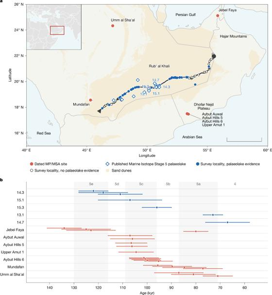
Stone and water governed early human settlement of the desert
—
A 1,500-kilometre geoarchaeological survey across Arabia's Rub' al Khali reveals that early human settlement in the desert was strictly constrained by knappable stone, not water alone. Despite identifying palaeolake deposits at 55 of 125 localities with over 95% ground visibility, researchers found zero lithic artefacts. Predictive spatial modelling showed 57% of water-accessible terrain across the Arabian Peninsula lacked tool-making stone; incorporating raw-material geology raised site-prediction discrimination from an AUC of 0.695 to 0.768, demonstrating that stone-tool dependencies limited Pleistocene dispersals.
Takeaway: Directly addresses your interest in human origins and archaeology, showing how early hominin migrations through 'Green Arabia' were tethered to geological stone sources rather than climate and freshwater alone.
Neuronal tRNA modifications in Aplysia californica are repatterned during behavioral habituation
—
Researchers at the University of Illinois demonstrated in Science Signaling that non-associative learning dynamically alters post-transcriptional tRNA modifications in Aplysia californica. During habituation of the defensive siphon-withdrawal reflex, anticodon loop modifications shifted predictably—with N6-isopentenyladenosine (i6A) increasing while N1-methyladenosine (m1A) and N7-methylguanosine (m7G) decreased in the controlling abdominal ganglion. Crucially, these shifts occurred without changes in parent tRNA abundance, revealing that behavioral learning directly modulates the activity of tRNA-modifying enzymes to regulate local translation and synaptic plasticity.
Takeaway: Appeals to your interest in neuroscience and cellular mechanisms, revealing how dynamic chemical modifications on tRNAs act as rapid post-transcriptional regulators of neural plasticity.
Vera Rubin Finally Delivers Its First Big Discovery
—
Fraser Cain recaps the week in space science, leading with the Vera C. Rubin Observatory detecting its first dwarf-planet candidate beyond Pluto. The roundup also details James Webb observations of colliding dwarf planets in another stellar system and radar evidence pointing to recent volcanism in Mars' Valles Marineris.
Takeaway: Matches your high interest in Rubin Observatory, JWST discoveries, and planetary astronomy with a comprehensive news roundup.
The Bizarre Secret Hiding Inside Cockroach DNA
—
Anton Petrov breaks down new genetics papers from PNAS and Nature Communications exploring the evolutionary biology of cockroaches. The explainer focuses on genomic discoveries revealing thousands of endosymbiont DNA transfer events within single genomes, tracing how bacterial symbiosis drove extreme adaptability and survival.
Takeaway: Connects with your biology and genetics interest through a study on endosymbiosis and genome evolution published this week.
Iran Proposes Two-Day Timeline to Reopen Strait of Hormuz While Warning Against US Military Strikes
—
Iranian Foreign Minister Abbas Araghchi announced that consultations with Qatari mediators yielded a revised proposal to fully reopen the Strait of Hormuz within two days, down from a previous week-long timeframe. Tehran’s terms include lifting recent maritime sanctions, restoring oil waivers, and unfreezing assets in Qatar. Simultaneously, Supreme Leader Mojtaba Khamenei ordered the armed forces to deliver an immediate, unrestricted response to any attack, while regional diplomats from Egypt and Saudi Arabia urged de-escalation at a Bahrain forum.
Takeaway: Ties directly to your tracking of Middle East geopolitics, energy transit corridors through Hormuz, and global macro stability.
G20 Foreign Ministers Meeting in Atlanta Ends Without Joint Communique Amid Clashes Over Ukraine
—
Top diplomats from the Group of 20 concluded a contentious two-day ministerial meeting in Atlanta without issuing a joint communique, reflecting intractable divisions over wars in Ukraine and the Middle East. Host US Secretary of State Marco Rubio will issue a chairman’s summary instead. Deep disagreements were exacerbated by Russian Foreign Minister Sergey Lavrov's attendance, which prompted European diplomats to threaten a boycott and forced organizers to cancel the traditional opening group photo.
Takeaway: Directly relevant to your tracking of global geopolitics and multilateral diplomacy as major powers fracture over European and Middle Eastern security architectures.
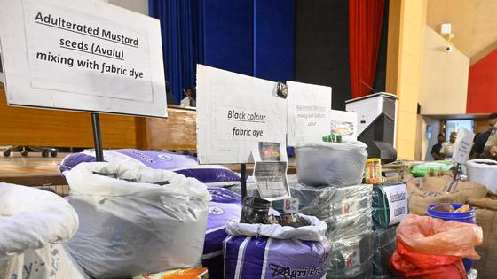
Telangana Invites Startups to Tackle Seven Public-Sector Challenges Under TISC
—
The Telangana government launched the Telangana Innovation Startup Challenge (TISC), inviting startups, researchers, and tech companies to solve seven priority public-sector problems by November 30, 2026. Directed by Chief Minister A. Revanth Reddy, the headline challenge seeks 30% cheaper solar-powered irrigation pumps with theft-resistant panels and tamper-proof metering. Other focus areas include AI-driven kitchen hygiene monitoring, satellite lake-encroachment tracking, automated pothole mapping, non-invasive haemoglobin scanners, and AI reading tutors. Selected solutions will be showcased at December's Invest Telangana Global Summit.
Takeaway: Connects directly to your tracking of Telangana governance, Hyderabad's startup ecosystem, and state-backed technology procurement.
Over 2,500 Telangana Discom Workers Deployed to Restore Andhra Pradesh Power Grid
—
In a major cross-border mutual aid effort, 2,527 personnel from Telangana's power distribution utilities (TGSPDCL and TGNPDCL) were deployed to restore electricity across Cyclone Arnab-battered districts in Andhra Pradesh. Operating across 114 specialized teams with 37 emergency vehicles and 32 pole augers, technicians are working round-the-clock replacing downed poles, conductors, and transformers in vulnerable Konaseema and Godavari belt towns, including Amalapuram, Bhimavaram, Razole, and Narsapur, to restore grid stability before subsequent weather systems develop.
Takeaway: Highlights interstate infrastructure collaboration and power grid recovery across Andhra Pradesh and Telangana following severe weather.
What’s the risk of political violence? | Martin Wolf on the US midterms
—
Ahead of the November midterm elections, Financial Times chief economics commentator Martin Wolf interviews political violence expert Barbara F. Walter. They examine historical warning signs of democratic breakdown, analyzing how demographic transitions and power struggles could trigger post-election unrest in the United States.
Takeaway: Connects with your interest in US politics and geopolitical stability through an in-depth analytical discussion with a leading conflict scholar.
FPIs are pulling out of India. Can tax reforms bring them back?
—
ThePrint examines why foreign portfolio investors pulled a record ₹3.07 lakh crore from Indian equities in 2026, offset by surging domestic retail and mutual fund inflows. The analysis details current capital gains tax friction and debates whether rationalizing tax rules can reverse foreign capital outflows.
Takeaway: Matches your India economy and market interest with an explainer on foreign capital flows and potential tax reforms.
Hylo Open: PV Sindhu Sweeps Anmol Kharb to Reach Women's Singles Final in Saarbrücken
—
In an all-Indian women's singles semifinal at the BWF Hylo Open 2026 Super 500 in Saarbrücken, Germany, second seed P.V. Sindhu defeated 19-year-old compatriot Anmol Kharb 21-13, 21-16. Sindhu utilized deep baseline clears and steep angles to blunt Kharb's agile net play and defensive counter-attacks. With the straight-games victory, Sindhu advanced to Sunday's championship match, where she will face top seed Line Hojmark Kjaersfeldt of Denmark.
Takeaway: Directly relevant to your badminton tracking, covering P.V. Sindhu's title run on the BWF World Tour circuit in Germany.
Hylo Open: Lakshya Sen Dispatches Toma Junior Popov in Straight Games to Make Saarbrücken Final
—
Seventh-seeded Lakshya Sen stormed into the men's singles final at the BWF Hylo Open 2026, defeating France's sixth seed Toma Junior Popov 21-17, 21-13 at the Saarlandhalle. Sen absorbed Popov's powerful overhead clears and steep smashes with relentless court coverage and sharp net interceptions, breaking open a tight opening game before cruising through the second. The 2019 champion now advances to Sunday's final to contest the BWF Super 500 title.
Takeaway: Directly aligns with your focus on Indian badminton stars and Lakshya Sen's campaign on the BWF World Tour.
Charles Leclerc tops Mexico City GP practice as Verstappen finishes fifth and Hamilton halts
—
Ferrari's Charles Leclerc backed up his FP1 pace by topping Friday's second practice at the Mexico City Grand Prix with a 1m 17.827s lap. Lando Norris finished second and George Russell third, both within 0.106 seconds of Leclerc. Championship leader Kimi Antonelli was fourth, while Max Verstappen placed fifth, more than three-tenths off the pace in his Red Bull. Lewis Hamilton's session ended early when he was instructed to halt his Ferrari due to a power unit issue.
Takeaway: Tracks the Mexico City race weekend and Max Verstappen's competitive deficit against Ferrari and McLaren as Red Bull fights for constructors' points.
India weigh changes for Hamilton T20I finale as Phillips chases bilateral run record
—
India hold a 3-1 lead heading into the fifth and final T20I at Seddon Park, Hamilton on 1 November, but an 87-run defeat in Auckland has prompted selection debates. Team management is weighing teenager Vaibhav Sooryavanshi to replace Sanju Samson, who scored only 14, 18, and 4 in his last three outings. Spin coach Sairaj Bahutule hinted Kuldeep Yadav and Varun Chakravarthy could both play. Meanwhile, New Zealand's Glenn Phillips has 276 series runs, just 56 shy of the all-time bilateral five-match record.
Takeaway: Directly sets up Sunday's series closer in Hamilton for the India national cricket team tour that you follow.
Pro Badminton Players' Rackets, Strings, and Tension Choices at Denmark Open 2026
—
In an equipment survey at the Denmark Open 2026, CK Yew asked top international players—including An Se-young, Christo Popov, Wang Zhiyi, and men's doubles pairs Supak Jomkoh and Peeratchai Sukphun—about their actual match racquets, strings, and tensions. The breakdown highlights that top singles players favor 28 to 31 pounds of tension with control-oriented strings, while power doubles specialists select thicker gauges and stiffer head-heavy frames to maximize smash rebound and frame durability.
Takeaway: Directly informs your equipment and string selection as a regular evening badminton player, giving benchmark tensions and string combinations used by world-class competitors.
Testing TrainBot's Automated Shuttle Feeding Machine for Club Training Drills
—
Former mixed doubles world champion Thomas Laybourn tested TrainBot's automated shuttle-feeding robot during the Denmark Open 2026 across three dedicated training routines: net play with rapid front-court reaction, lift-to-rear court transitions, and full-court multi-shuttle endurance. Laybourn assesses whether programmable feeding machines deliver the trajectory consistency, variable shot pacing, and repetitive volume required for adult club players to practice match scenarios without requiring a dedicated feeding partner.
Takeaway: Connects to your weekly badminton training, exploring how programmable automated multi-shuttle drills can improve front-court reaction and rear-court transition timing during solo practice.
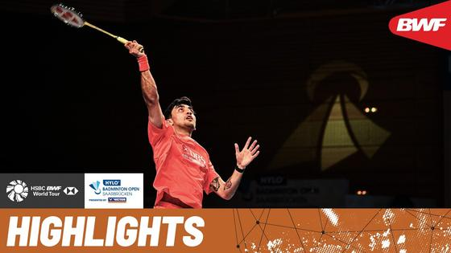
Toma Junior Popov vs Lakshya Sen | Pace, attack and court coverage
—
Official BWF TV highlights of the Hylo Open 2026 men's singles semifinal in Saarbrücken between France's Toma Junior Popov and India's Lakshya Sen. The eight-minute package showcases explosive smashes, quick net exchanges, and defensive retrieval from both competitors fighting for a spot in Sunday's Super 500 final.
Takeaway: Follows Lakshya Sen in the Hylo Open semifinals, directly connecting to your badminton tracking and men's singles interests.
How Teams Have Modified Their Cars For Mexico | F1 TV Tech Talk
—
Formula 1 tech analyst Sam Collins examines how teams adjusted cooling packages and aerodynamics for the high-altitude conditions of the Autódromo Hermanos Rodríguez in Mexico City. The 15-minute technical breakdown covers McLaren's cooling ducts, Red Bull's remodelled sidepods, Audi's altitude package, and rear-wing airflow adaptations across the grid.
Takeaway: Official Formula 1 technical explainer breaking down the aerodynamic and cooling adjustments for the Mexico City Grand Prix you track.
Why outcome-only metrics fail on multi-step rollouts, how state-delta assertions rescue evaluation, and why judges need agentic harnesses
Read the full deep dive analysis →
Aadarsha Kutumbam Opens with Rs 16 Crore Worldwide Gross on Day 1
—
Venkatesh and director Trivikram Srinivas's crime family comedy Aadarsha Kutumbam grossed approximately Rs 16 crore worldwide on its opening Friday, with domestic theatres in the Telugu states contributing Rs 11 crore alongside solid North American receipts. While critical reviews were mixed and adverse coastal weather dampened initial turnouts, theatrical footfalls trended upward into Saturday morning, driven by positive reception for Venkatesh's comic timing and the interval sequence. The film plays in theatres worldwide.
Takeaway: Ties directly to your tracking of Tollywood weekend box office numbers and festive theatrical openings.
Itlu Arjuna Reschedules Theatrical Release to November 13
—
Producers What Next Entertainments announced that romantic drama Itlu Arjuna will release worldwide on November 13, 2026, after deferring its earlier October 30 date to avoid a crowded theatrical window. Directed by Mahesh Uppala and presented by Nagarjuna, the film features newcomer Anish playing a speech- and hearing-impaired youth opposite Anaswara Rajan. Produced by filmmaker Venky Kudumula, the production features music composed by S. Thaman and will arrive across theatres worldwide.
Takeaway: Relevant to your tracking of Telugu theatrical release schedules and composer Thaman's latest soundtracks.
GV Prakash Kumar Hypes Dulquer Salmaan’s Aakasamlo Oka Tara as Film of the Year
—
Music composer GV Prakash Kumar praised the soundtrack and narrative of Dulquer Salmaan’s upcoming emotional drama Aakasamlo Oka Tara, describing it as the film of the year. Following the major success of his music in Irumudi, Prakash highlighted Aakasamlo Oka Tara as his next big Telugu release arriving in theatres on November 20, 2026. Directed by Pavan Sadineni, the film's musical promotion kicked off recently with the melody Radhe Radhe.
Takeaway: Ties into your interest in leading South Indian film composers and soundtrack releases following blockbuster musical runs.
First Single 'O Maisare' from Rashmika Mandanna’s Mysaa Set for November 2 Release
—
The makers of Rashmika Mandanna’s action drama Mysaa have announced that musical promotions will begin with the release of the first single, O Maisare, on November 2, 2026. Directed by Ravindra Pulle and co-produced by Unformula Films and T-Series, the film features a soundtrack composed by Jakes Bejoy. The announcement initiates the promotional countdown toward the film’s worldwide multi-lingual theatrical premiere scheduled for November 27, 2026.
Takeaway: Matches your interest in upcoming Telugu film songs, single drop calendars, and composer Jakes Bejoy's new projects.
Summer Holidays sets 6 November theatrical release across Telugu states and US theatres
—
Producer Dheeraj Mogilineni has locked 6 November 2026 for the theatrical release of the nostalgic family entertainer Summer Holidays, directed by debutant Srikar Nayan G. The film stars National Award-winning child artist Master ArunDev Pothula, Master Rohan, Baby Khushi, and veteran actress Jayasudha, alongside Harsha Vardhan and Vasuki Anand. Set in a Godavari village, the narrative explores the contrasting worlds of two children coping with academic pressure and village friendships. Overseas premieres begin on 5 November via Prathyangira Cinemas.
Takeaway: Key entry on your Tollywood theatrical calendar for early November, tracking new family-oriented Telugu cinema and its North American release schedule.
Vikram Sahidev's rustic crime drama Anakapalli premieres 3 November on Sun NXT
—
Telugu action and crime drama Anakapalli will make its digital streaming premiere on Sun NXT on Tuesday, 3 November 2026. Directed by Khagesh Tammineni and produced by Bhavya Sri Movie Makers with Nakkina Narratives, the film stars Vikram Sahidev and Sandhya Vasishta in lead roles. The storyline follows a young man drawn into the criminal underworld in rural Anakapalli whose perspective shifts when a romantic relationship forces him to confront questions of loyalty, power, and his forgotten ambitions following its theatrical run.
Takeaway: Opens the November Telugu OTT streaming calendar on Sun NXT, tracking digital premiere dates for recent regional theatrical releases.
Bollywood Diwali Night: Yeh Jawaani Hai Diwali in Cupertino
—
Bollywood Dance Connection and VDESI JAM host a Diwali celebration at Cupertino Community Hall on Sunday, November 1, from 6:00 PM to 9:00 PM PDT. The evening features Bollywood and South Indian DJ dance sets spanning Hindi, Telugu, and Tamil tracks, alongside karaoke sessions, costume contests, dance competitions, and festive Indian food available for purchase. General admission tickets start at $10 (BOGO offer $11.89 including fees), with proceeds supporting children's initiatives.
Takeaway: Takes place tomorrow evening in Cupertino with a dedicated multilingual music track including Telugu hits for local Diwali festivities.
Studio Concert Series: Carnatic Vocal and Flute Recital in Palo Alto
—
Swara Lahari presents an intimate live studio recording concert of South Indian Carnatic classical music at Midpen Media Center in Palo Alto on Saturday, November 14, from 4:00 PM to 6:00 PM PDT. The recital features All India Radio A-Grade vocalist Vani Ramamurthi, flautist Anirudh Bharadwaj, and mridangam artist Vignesh Venkataraman. Doors close promptly at 4:00 PM for live broadcasting and recording. Tickets are $23.18.
Takeaway: Brings live South Indian classical music and Carnatic repertoire to a close-by Peninsula venue next to the South Bay.
TMS Entertainment sets Detective Conan collection 'Clash of the Red and Black' for November 1 on Netflix and Crunchyroll
—
TMS Entertainment announced that the fourth specially curated episode selection for the Detective Conan anime will stream on Netflix and Crunchyroll starting Sunday, November 1, 2026. Titled 'Clash of the Red and Black,' the multi-episode collection focuses on the high-stakes confrontation between the FBI and the elusive Black Organization. The arc, previously unavailable with an English release in Western markets, will stream in its original Japanese audio alongside a newly recorded English dub.
Takeaway: Connects directly to your anime and procedural crime mystery interests, bringing a long-awaited FBI confrontation arc to Netflix and Crunchyroll this weekend.
Variety reviews Peter Berg's World War II drama The Mosquito Bowl ahead of Netflix release
—
Variety critic Guy Lodge reviewed Peter Berg's World War II drama The Mosquito Bowl, which opened in select theaters on October 30 before streaming globally on Netflix on November 25, 2026. Adapted from Buzz Bissinger's 2022 historical book, the film stars Nicholas Galitzine and Bill Skarsgård as college football standouts who enlisted in the Marines following Pearl Harbor and played an exhibition game on Guadalcanal before invading Okinawa. Lodge praises the harrowing battlefield staging while finding the character arcs conventional.
Takeaway: Provides an early critical assessment of a major upcoming Netflix historical drama to help plan your streaming and film watchlist for November.
Dhumavati - Audio Song | The Paradise | Nani | Anirudh Ravichander | Srikanth Odela
—
Saregama Telugu released the official audio track Dhumavati from The Paradise, starring Nani and Sonali Kulkarni under the direction of Srikanth Odela. Composed by Anirudh Ravichander with vocals by folk singer Mangli and traditional lyrics, the six-minute piece introduces a rustic, percussion-driven tone that expands the film's evolving soundtrack.
Takeaway: Directly fits your Telugu cinema and film-music follows, featuring Anirudh Ravichander's latest composition for Nani's upcoming project.
Full Lyrical: My Dear Janathaa | Bad Boy Karthik | Naga Shaurya | Harris Jayraj | Vidhi yadav
—
T-Series Telugu launched the official full lyrical video for My Dear Janathaa from the romantic drama Bad Boy Karthik, starring Naga Shaurya and Vidhi Yadav. Composed by veteran music director Harris Jayaraj, the melodic five-minute composition combines romantic acoustic arrangements with crisp lyric typography and preview footage ahead of the theatrical release.
Takeaway: Connects to your Telugu music listening interests and followed composers, marking Harris Jayaraj's latest work in Tollywood.
Is AI the End of Math As We Know It?
—
Jordana Cepelewicz argues that rapid advances in AI theorem proving have triggered a cultural crisis in mathematics by separating problem-solving from human understanding. Because frontier models produce verified proofs that elide conceptual motivation, the field risks drowning in uninterpretable results while corporate labs hoard breakthroughs. You gain insight into how mathematicians are redefining their discipline: shifting the core value from proving conjectures to curating meaning, training interpreters, and defending open scientific discourse against machine-generated opacity.
Takeaway: Connects to your interest in frontier AI models and reasoning capabilities, highlighting the epistemological shift from generating automated solutions to verifying and synthesizing complex agent-produced outputs.
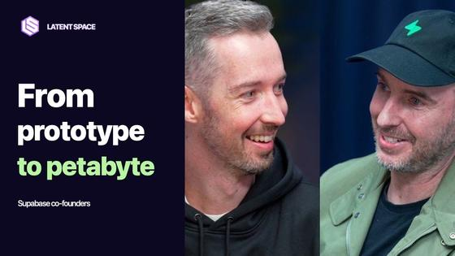
Why Agents Love Supabase
—
Supabase co-founders Paul Copplestone and Ant Wilson join swyx to explain why AI coding agents gravitate toward Postgres backends. They discuss Supabase Compute, an alpha runtime allowing long-lived agent workloads to execute directly alongside the database, reducing latency and operational friction. The founders reveal that Supabase now launches approximately five million databases per month, and explain how declarative schemas in Git and their acquisition of Turso enable scalable, distributed infrastructure for autonomous software factories.
Takeaway: Directly relevant to your AI coding tools and agent runtime interests: explores how database architectures and container runtimes adapt when autonomous agents provision and modify entire production backends.
Freedom of Action: America's ASI Strategy, w/ RAND's Joel Predd, Ben Boudreaux & Matt Chessen
—
RAND Corporation researchers Joel Predd, Ben Boudreaux, and Matt Chessen join Nathan Labenz to present their strategic framework for navigating the path toward superintelligence. Analyzing seven distinct strategic archetypes—including acceleration, decisive dominance, deterrence, co-development, and moratoriums—they argue that profound technological and geopolitical uncertainties make premature commitment to any single archetype dangerous. Instead, they propose a 'freedom of action' doctrine that prioritizes building baseline, no-regret capabilities in model verification, containment mechanisms, agency evaluations, and adaptable security infrastructure.
Takeaway: Connects to your geopolitics and agent security interests: examines strategic frameworks for superintelligence and the critical need for long-lead investments in agency evaluations, verification tools, and containment.
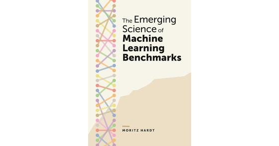
The Emerging Science of Machine Learning Benchmarks by Moritz Hardt
—
Written by Moritz Hardt and published by Princeton University Press on October 6, 2026, this volume provides the first comprehensive theoretical and empirical foundation for machine learning benchmarking. Hardt examines why sharing test sets drove decades of progress despite violating statistical holdout principles, demonstrating that relative model rankings replicate reliably even when absolute scores do not. The book explores modern LLM evaluation failures—including training-data contamination, multi-task aggregation artifacts, performative data feedback loops, and fundamental limits to LLM-as-a-judge supervision.
Takeaway: Directly grounds your agent-evals work and benchmark-building research, providing rigorous mathematical and empirical arguments on judge calibration, multi-task aggregation, and why relative model rankings survive when absolute metric scores drift.
4th Lowrider Art Showcase and Día de los Muertos at Montalvo Arts Center
—
Montalvo Arts Center in Saratoga hosts its free 4th Lowrider Art Showcase celebrating Día de los Muertos on Sunday, November 1, from 1:00 p.m. to 5:00 p.m. Presented with the United Lowrider Council of San Jose and Local Color SJ, the gathering features customized lowriders on the Great Lawn, an ancestral community ofrenda in the Oval Garden, live mariachi and ballet folklórico performances, local food trucks, and hands-on Mexican tin art workshops. Free parking and shuttles operate from West Valley College Lot 5.
Takeaway: Connects with your active thread on South Bay weekend outings, local cultural festivals, and community arts across Santa Clara County.
Midpen Guided 4.5-Mile Autumn Loop Hike at Long Ridge Open Space Preserve
—
The Midpeninsula Regional Open Space District is hosting a free docent-led 4.5-mile hike, Fall Frolic With a View, on Friday, November 6, from 1:00 p.m. to 4:30 p.m. at Long Ridge Preserve. Docent naturalists lead hikers through mixed evergreen woodlands and grasslands along Peters Creek and Long Ridge trails to the Wallace Stegner granite bench for scenic views of the Pescadero Creek watershed. Meet at the Peters Creek roadside pullout on Skyline Boulevard.
Takeaway: Directly supports your interest in outdoor activities, hiking trails, and open space preserves near the South Bay and Santa Cruz Mountains.
New Zealand Great Walks 2026/27 Summer Season Opens November 1 with Mandatory Hut Bookings
—
New Zealand's Department of Conservation opens its 2026/27 Great Walks season on November 1, 2026, running through April 30, 2027, across premier tracks including the Milford, Routeburn, and Kepler tracks. The summer season activates serviced huts, resident rangers, and gas cooking facilities, but requires mandatory pre-booked hut permits, with international adult hut fees set at NZ$152 per night on the Milford Track. Independent walkers without valid reservations face penalties or are turned away.
Takeaway: Essential timing for your New Zealand travel list, as official ranger services and strict summer hut booking rules take effect on November 1.
United Airlines Restarts Daily SFO–Cincinnati Nonstops and Adds Three Transcontinental Routes
—
United Airlines has expanded its network at San Francisco International Airport (SFO), resuming daily nonstop flights between SFO and Cincinnati (CVG) on October 26, 2026, using Boeing 737-800 aircraft after a six-year hiatus. The airline also announced three new transcontinental nonstop routes from SFO starting March 28, 2027: daily service to Hartford, daily service to Oklahoma City, and four-times-weekly seasonal summer service to Charleston.
Takeaway: Useful for your travel list and flight planning from SFO as United restores Midwest connections and adds new East Coast nonstops.
Google Pixel Buds Pro 2 Drop to $169 All-Time Low on Amazon ($60 Off)
—
Amazon discounted Google's flagship Pixel Buds Pro 2 down to $169 shipped across all four colorways, including Hazel, Porcelain, Peony, and Olive. Reduced by $60 from their regular $229 retail price, the promotion delivers a fresh 2026 all-time low that undercuts fall Prime Day pricing and matches early Black Friday doorbusters at Best Buy.
Takeaway: Fits your interest in the Google Pixel and Android hardware ecosystem and daily mobile audio accessories.
Google Gemini Notebook Adds Free Access to Hundreds of Academic Textbooks
—
Google expanded Gemini Notebook by adding full zero-cost access to hundreds of digital textbooks from OpenStax, Open Textbook Library, and India's S Chand Publishing. Users can attach entire volumes as native sources via Add sources to query specific concepts with inline citations, generate custom practice quizzes, and extract automated study flashcards without separate digital book purchases or subscription fees.
Takeaway: Connects to your use of NotebookLM and Gemini, providing free textbook reference corpora directly inside your AI research workspace.
10, 14 or 21 Days in New Zealand? Don’t Make This Mistake!
—
New Zealand trip planner Michael Nees outlines how to allocate travel time across 10, 14, and 21-day itineraries without overbooking drive times. The guide demonstrates why a 10-day trip should stick to one island, highlights the strategic domestic flight swap between Christchurch and Rotorua that saves two days on the road, and provides realistic route spacing.
Takeaway: Relevant to your New Zealand travel research, offering concrete itinerary benchmarks before you compare flights or lock in route timelines.
Paris vs. Strasbourg at Christmas: Our Honest Verdict
—
Les Frenchies compare winter holiday trips to Paris and Strasbourg across six key factors: market scale, illuminations, culinary specialties, crowd density, hotel expenses, and transit logistics. The video analyzes whether the two-hour TGV ride from Gare de l'Est to Alsace justifies splitting a winter itinerary or whether staying within Paris offers a smoother vacation experience.
Takeaway: Connects to your Europe and Paris trip planning, helping evaluate holiday schedules, winter crowds, and regional train connections.